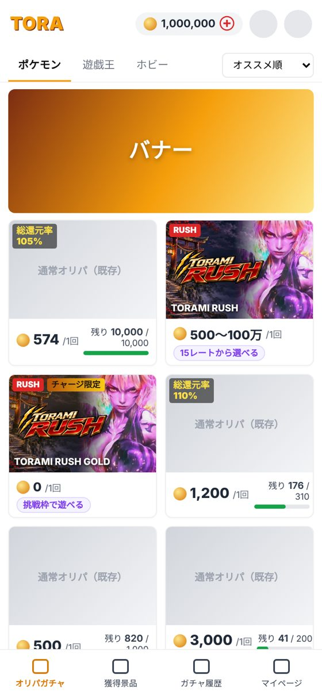
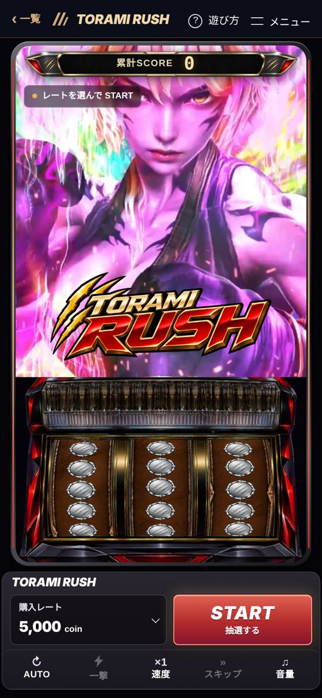
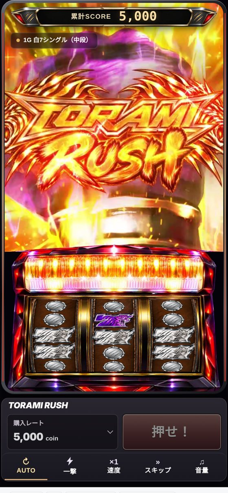
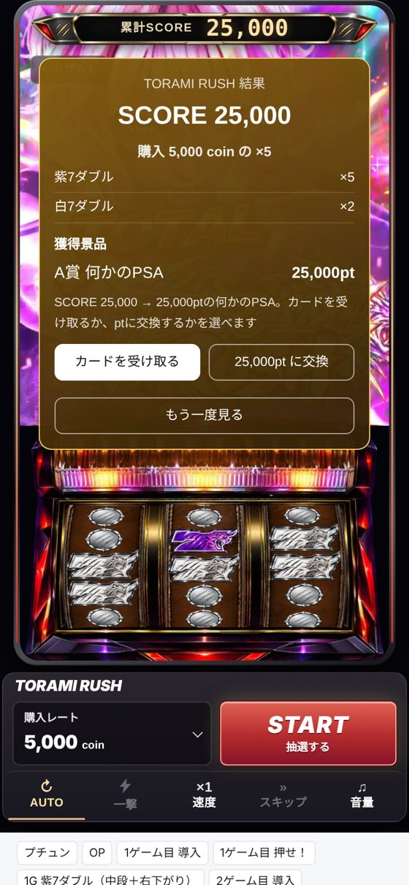
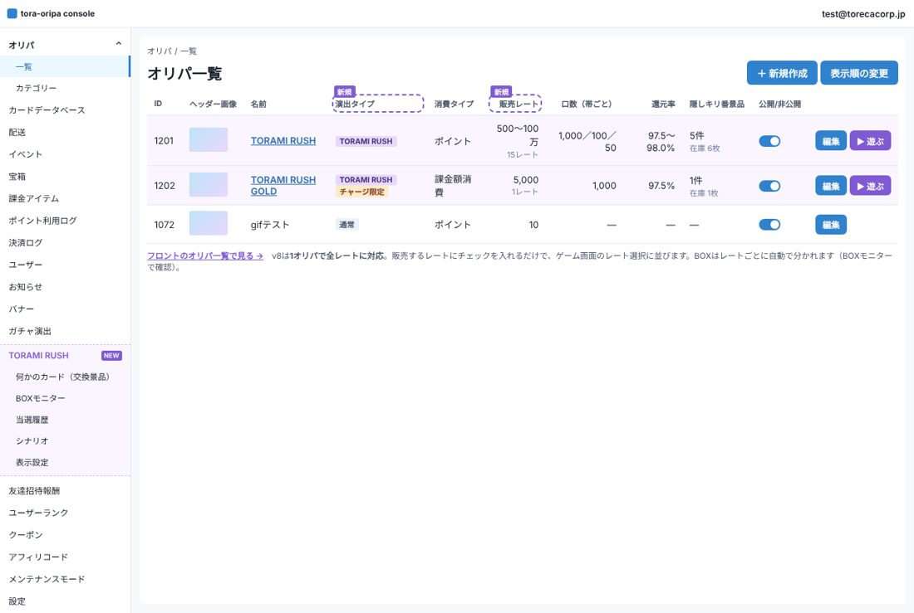
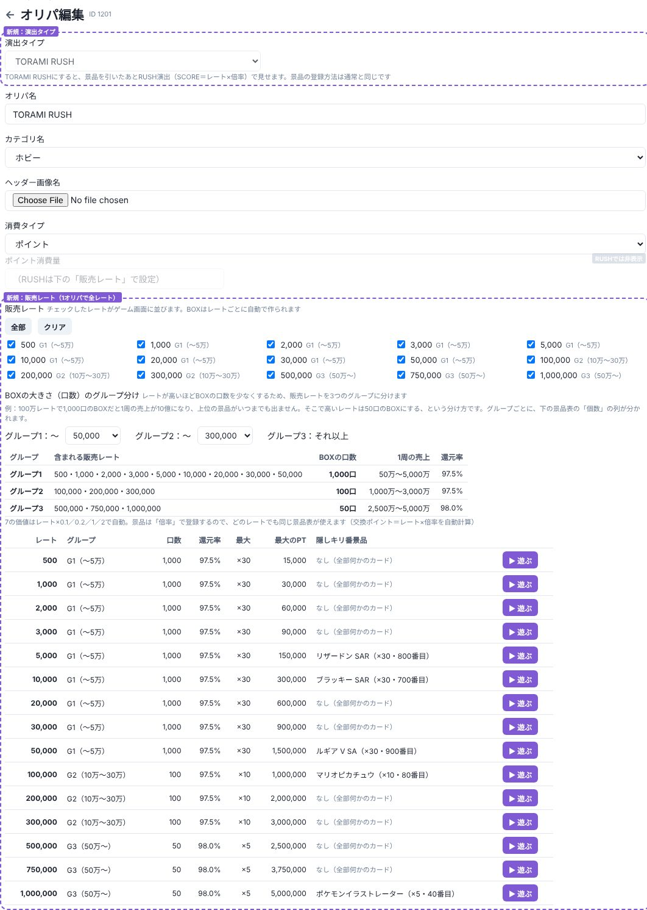
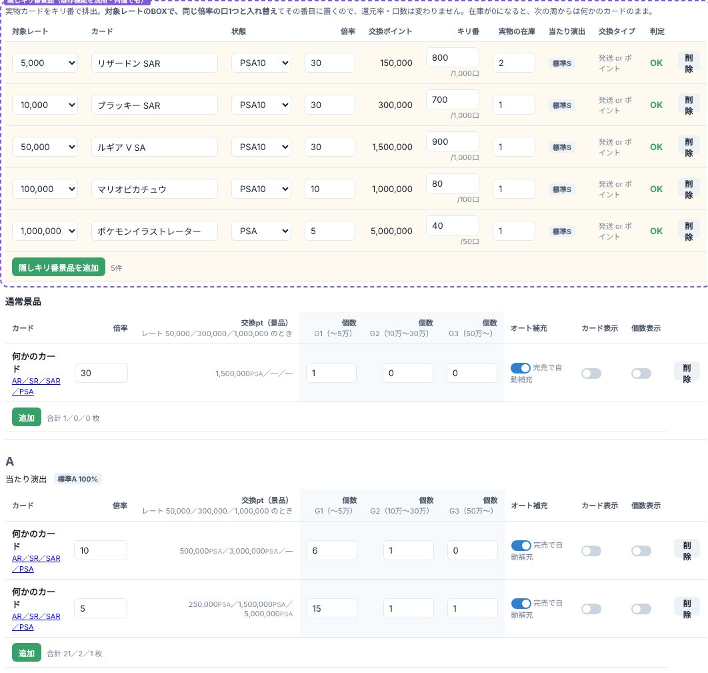
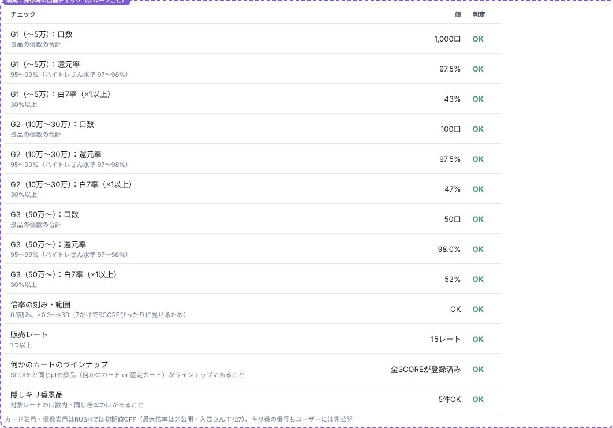
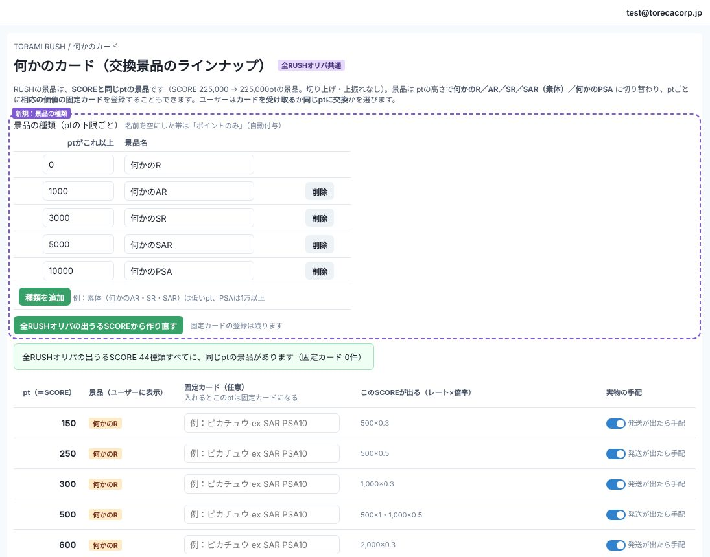

11/28 23時 入江さんのご指摘を反映（スマホ1画面に収める／SCOREと景品のptを完全一致／レート帯→BOXの大きさのグループ）｜フロントの動き／管理画面でのガチャの作り方／交換景品（何かのカード）／シミュレーション結果／既知の課題とゆうぽんさんへの依頼 2026年11月28日
| 画面 | URL |
|---|---|
| フロント（オリパ一覧） | https://jackandace.github.io/torecacorp/tora-rush-v8/front.html ここから見るのがおすすめ。RUSHのカードを押すとプレイ画面へ |
| プレイ画面（プロト） | https://jackandace.github.io/torecacorp/tora-rush-v8/ |
| 管理画面モック | https://jackandace.github.io/torecacorp/tora-rush-v8/admin.html ここで作った・変えたガチャは、同じブラウザのフロントとプロトにすぐ反映されます（設定はブラウザに保存） |
| この説明書 | https://jackandace.github.io/torecacorp/tora-rush-v8/manual.html |
前の版もそのまま残しています：v7（1レート1オリパ）／v6（倍率BOX）
| 項目 | 内容 |
|---|---|
| ガチャの単位 | 1つのRUSHガチャで全レートに対応。販売するレートをチェックで選ぶだけ。RUSHガチャは何個でも作れる（全レート版、高額だけ、チャージ限定 など） |
| レート | 500〜1,000,000 coin の15段階から選んで販売 |
| 抽選 | 1回の購入＝1回の抽選。そのレートのBOXから「倍率の口」を1つ引く。SCORE＝レート×倍率 |
| BOX | レートごとに自動で作られる固定BOX（全口シャッフル → 順に販売）。完売したら同じ内容で自動補充。1周売り切ると必ず設計どおりの還元率で着地 |
| 景品 | S〜その他のランクに「何かのカード」を倍率で登録（既存の景品登録の形を流用）。当たったらSCOREと同じptの何かのR／AR／SR／SAR（素体）／PSA、または同じ価値の固定カードになり、カードを受け取る か 同じptに交換を選ぶ |
| 目玉景品 | Sの「隠しキリ番景品」（既存機能）に実物カードを何個でも。対象レートとキリ番を指定 |
| 表示 | 還元率はBOX全体の設計値として表示。最大倍率・キリ番の番号・BOXの残り状況は出さない |
| 演出 | RUSHは最低3連。7が揃わなかったゲームで終了。7は紫7・白7のシングル／ダブル（レート×0.1／0.2／1／2）。逆転演出（倍プッシュ・輪廻転生）とダブル前のフリーズあり |




ptの高さで景品の種類が決まり、どのSCOREでも現物の発送か同じptに交換を選べます（EC要素を残す・法的にも現物発送がある形）。
| pt | 景品 | 例 |
|---|---|---|
| 〜999 | 何かのR（素体） | SCORE 300 → 何かのR（300pt） |
| 1,000〜 | 何かのAR（素体） | SCORE 1,500 → 何かのAR（1,500pt） |
| 3,000〜 | 何かのSR（素体） | SCORE 4,000 → 何かのSR（4,000pt） |
| 5,000〜 | 何かのSAR（素体） | SCORE 9,000 → 何かのSAR（9,000pt） |
| 10,000〜 | 何かのPSA | SCORE 225,000 → 何かのPSA（225,000pt） |
| （任意のpt） | 固定カード | 150,000ptに「リザードン ex SAR PSA10」を登録 → SCORE 150,000 はそのカード（150,000pt） |
帯の区切り（1,000／3,000／5,000／10,000）は仮の値です。管理画面で自由に変更・追加でき、名前を空にした帯は「ポイントのみ（自動付与）」になります。
tora-oripa console のオリパ編集をそのまま使い、RUSHに必要な項目だけ足しています（画面の紫の点線＝追加する部分、グレー＝RUSHでは使わない既存項目）。左メニューに「TORAMI RUSH」グループ（何かのカード／BOXモニター／当選履歴／シナリオ／表示設定）を追加。




| 画面 | 使い方 |
|---|---|
| 何かのカード | 景品の種類（ptの帯ごとの名前）と、ラインナップ（＝出うるSCORE）。ptごとに固定カードを登録できる。各ptに「このSCOREが出るレート×倍率」が出るので、手配が必要なカードがわかる |
| BOXモニター | オリパ×レートごとのBOXの進み具合・この周の還元率・最大持ち出し・隠しキリ番の位置と排出済みか（運営だけが見る） |
| 当選履歴 | 引いた結果（レート・BOXの何口目・倍率・SCORE・景品・受け取り方法） |
| シナリオ | 7の出方のパターン12種の出やすさ、ガセ（失敗する逆転）の率、フリーズの率（全RUSH共通） |
| 表示設定 | 購入ボタン近くと遊び方に出す注意書き |

| ランク | 倍率 | G1（〜5万） | G2（10万〜30万） | G3（50万〜） |
|---|---|---|---|---|
| S | ×30 | 1 | 0 | 0 |
| A | ×10 | 6 | 1 | 0 |
| A | ×5 | 15 | 1 | 1 |
| B | ×3 | 40 | 4 | 2 |
| B | ×2 | 90 | 8 | 5 |
| C | ×1 | 280 | 33 | 18 |
| D | ×0.5 | 298 | 28 | 14 |
| その他 | ×0.3 | 270 | 25 | 10 |
| 口数／還元率 | 1,000口／97.5% | 100口／97.5% | 50口／98.0% |
最大は G1が×30、G2が×10、G3が×5。隠しキリ番の初期値：5,000（リザードン SAR・800番目）、10,000（ブラッキー SAR・700番目）、50,000（ルギア V SA・900番目）、100,000（マリオピカチュウ・80番目）、1,000,000（ポケモンイラストレーター・40番目）
全口をシャッフルして順に売るため、1周（全口）売り切ると、払い出しは必ず「売上×設計の還元率」になります（運に左右されない）。プロトのBOXモニター「100回売る／全レートを1周分ずつ売る」で確認済み。
現物が出ずにptに交換されるならCF上は許容できる一方、交換したときの還元率が100%を超えるとコインが膨らみ続けるので検証しました。SCOREと景品のptを完全一致にしたので、交換したときの還元率＝設計の還元率（97.5〜98%）になり、どのレートでも必ず収束します。
条件：元手＝100回分のコイン。当たりは全部ptに交換し、そのコインで同じレートを打ち続ける（最大5,000回・2,000人分）
| レート | 口数 | 還元率（＝全部pt交換） | 破産率 | 結果 |
|---|---|---|---|---|
| 500〜50,000（G1） | 1,000 | 97.5% | 100% | 元手の約32倍の回数を打ってゼロに収束 |
| 100,000〜300,000（G2） | 100 | 97.5% | 100% | 約37倍の回数でゼロに収束 |
| 500,000〜1,000,000（G3） | 50 | 98.0% | 100% | 約48倍の回数でゼロに収束 |
| 項目 | お願いしたい内容 |
|---|---|
| 見え方 | 筐体の窓にちょうど3コマ（上・中・下）だけ見えるようにしたい。今は約5コマ見えている |
| コマ数・大きさ | 1リールを12コマ（1周360°÷12＝1コマ30°）で作成。1コマの高さ＝窓の高さの1/3になる大きさ |
| 図柄の並び | 今の並びの考え方は維持：左・右リールは紫7・白7がそれぞれ縦に2つ連続（ダブル揃い用）、中リールは紫7・白7が1つずつ。残りはコイン（ハズレ図柄）。7同士・7とコインが重ならないこと |
| つなぎ目 | 画像の上端と下端が継ぎ目なくつながる（ループしたときに切れ目が見えない）。上下を黒くしない |
| 納品形式 | PNG、左・中・右の3枚（今と同じ縦長でOK）。可能なら回転中のブレ版も（なければこちらで作ります） |
| 項目 | お願いしたい内容 |
|---|---|
| 現状 | プロト側のつなぎで音がずれる・違う音が鳴ることがあるので、本番実装で合わせ直します |
| お願い | 映像に入っている音と別に鳴らしている効果音（停止音・揃い音・押せ！・TOTAL など）の一覧と、映像のどの時点で鳴る想定かを教えてほしい。効果音を映像に焼き込むか、別ファイルで鳴らすかもすり合わせたい |
| # | 論点 | 今の仮の値 |
|---|---|---|
| 1 | 何かのカードの帯の区切り（R／AR／SR／SAR／PSA）。特にSRとSARの価格感 | 〜999 R／1,000〜 AR／3,000〜 SR／5,000〜 SAR／10,000〜 PSA |
| 2 | 固定カードを登録するptと、そのカード（任意） | 未登録（全部 何かのカード） |
| 3 | BOXの大きさのグループ分けと口数 | 〜5万＝1,000口／10万〜30万＝100口／50万〜＝50口 |
| 4 | 隠しキリ番の在庫が2枚以上のとき | 1周に1枚ずつ、在庫が尽きるまで毎周入れる |
| 5 | フロントのカード画像・価格表記・並び順 | RUSH素材の仮画像／「500〜100万」／通常オリパの2枚目 |
| 6 | シナリオ・表示設定をRUSHガチャごとに変えたいか | 全RUSH共通 |
| 7 | 注意書き（キリ番がある旨・何かのカードは運営が選定）の弁護士確認 | 表示設定に文案あり |